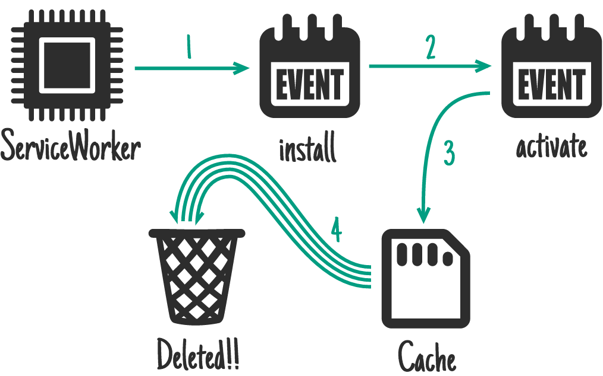
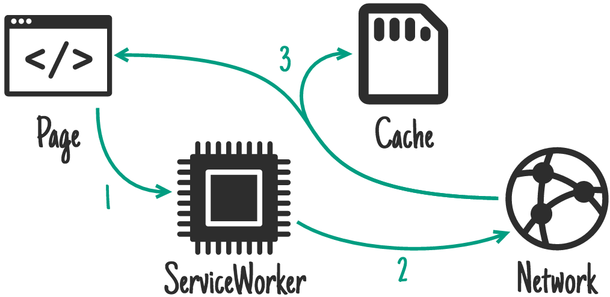
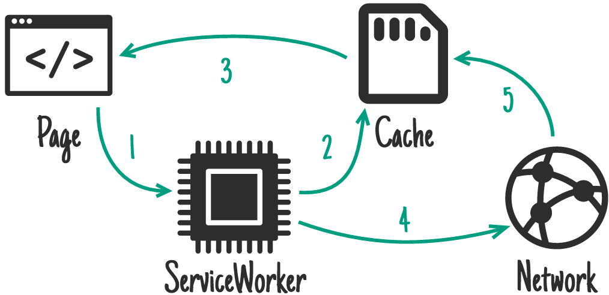
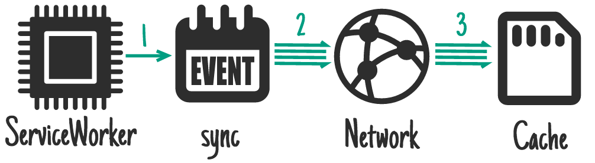
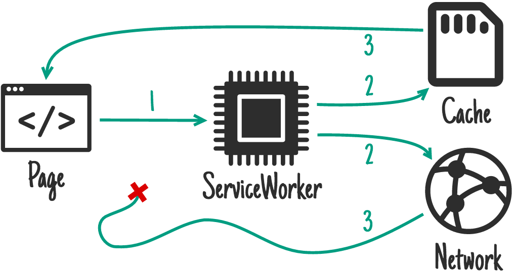
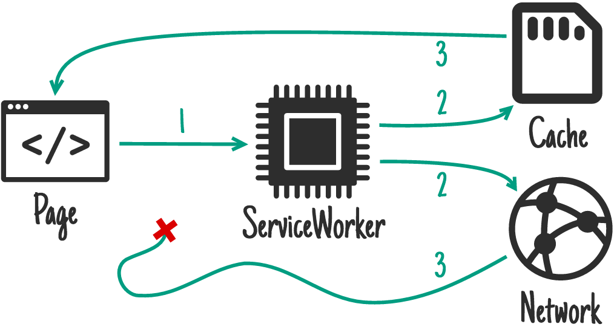

Are we going to talk about frameworks?
Not much ...
we are going to concentrate on the platform
ECMAScript 6
WebComponents
Cache/Storage
Service Workers
Web APIs
Progressive Web Apps
ECMAScript 6
WebComponents
Cache/Storage
Service Workers
Web APIs
Progressive Web Apps
What's
new?
We have
ECMAScript 2015!
Let's go through a few of its highlights...
ES2015 Classes
class Shape {
constructor(x, y) {
this.move(x, y);
}
move(x, y) {
this.x = x;
this.y = y;
}
}
class Rectangle extends Shape {
constructor(x, y, width, height) {
super(x, y);
this.width = width;
this.height = height;
}
}
ES5 Constructor Functions and Prototypal Inheritance
var Shape = function (x, y) {
this.move(x, y);
};
Shape.prototype.move = function (x, y) {
this.x = x;
this.y = y;
};
var Rectangle = function (width, height) {
this.width = width;
this.height = height;
};
Rectangle.prototype = new Shape(1, 5);
var smallRectangle = new Rectangle(10, 20);
ES2015 Arrow Functions / Lexical this
class Classroom {
constructor() {
this.students = [
{name: 'Joe', isMyFriend: false},
{name: 'Eric', isMyFriend: true}];
this.anyFriendThere = false;
}
checkIfAnyFriendThere() {
this.students.forEach((student) => {
if (student.isMyFriend) {
this.anyFriendThere = true;
}
});
}
}
ES5 bind()
var classroom = {
students: [
{name: 'Joe', isMyFriend: false},
{name: 'Eric', isMyFriend: true}],
anyFriendThere: false,
checkIfAnyFriendThere: function () {
this.students.forEach(function (student) {
if (student.isMyFriend) {
this.anyFriendThere = true;
}
}.bind(this)); // binds this to the function context
}
};

ES2015 Promises
let sayHello = function (name) {
return new Promise(function (resolve, reject) {
setTimeout(() => resolve(`Hello ${name}`), 1000);
});
};
sayHello('Joe')
.then((helloToJoe) => {
console.log(`Someone says: ${helloToJoe}`);
return sayHello('Eric');
})
.then((helloToEric) => {
console.log(`Someone says: ${helloToEric}`);
});
ES5 callbacks
var sayHello = function (name, onSuccess) {
setTimeout(function () {
onSuccess('Hello ' + name);
}, 1000);
};
sayHello('Joe', function (helloToJoe) {
console.log('Someone says: ' + helloToJoe);
sayHello('Eric', function (helloToEric) {
console.log('Someone says: ' + helloToEric);
});
});
Code examples from http://es6-features.org/ Code examples from http://es6-features.org/
ES2015 Module Exports / Imports
// greeter.js
export function sayHelloTo(name) {
return `Hello ${name}`;
}
// my-code.js
import {sayHelloTo} from './greeter';
console.log(sayHelloTo('Joe'));
ES5 Namespace Pattern
// greeter.js
var myNamespace = {};
myNamespace.sayHelloTo = function (name) {
return `Hello ${name}`;
};
// my-code.js
console.log(myNamespace.sayHelloTo('Joe'));
We have even more than ES2015...
Typical Angular 2 Component
import {Input, Component} from '@angular/core';
@Component({
selector: 'hello',
template: '<h1>Hello {{name}}!</h1>'
} as Component)
export class HelloComponent {
@Input()
name: string;
}
ECMAScript 6
WebComponents
Cache/Storage
Service Workers
Web APIs
Progressive Web Apps
Web Components
Dreams do come true...
We've come a long way...
Templates
<template id="my-template">
<div>
<p>This is my template</p>
</div>
</template>
var template = document.querySelector('#my-template'),
clone = document.importNode(template.content, true);
document.body.appendChild(clone);
Shadow DOM
<template id="my-template">
<div><p>This is my template</p></div>
</template>
<div id="john">
<p>John</p>
</div>
<div id="eric">
<p>Eric</p>
</div>
var template = document.querySelector('#my-template'),
host = document.querySelector('#eric'),
root = host.attachShadow({mode: 'closed'}),
clone = document.importNode(template.content, true);
root.appendChild(clone);
Custom Elements
<my-template></my-template>
<my-template></my-template>
<my-template></my-template>
<template id="my-template">
<div><p>This is my template</p></div>
</template>
var myTemplateHtmlElement = Object.create(HTMLElement.prototype);
myTemplateHtmlElement.createdCallback = function () {
var template = document.querySelector('#my-template'),
clone = document.importNode(template.content, true),
root = this.attachShadow({mode: 'closed'});
root.appendChild(clone);
};
document.registerElement("my-template",
{prototype: myTemplateHtmlElement});
HTML Imports
<head>
<link rel="import" href="my-template/my-template.html">
</head>
<body>
<my-template></my-template>
<my-template></my-template>
<my-template></my-template>
</body>
We`re supposed to avoid talking about frameworks, are we?
Yes, we are, but...
Let's
Get Rid Of
the Boilerplate
<link rel="import"
href="https://polygit.org/components/polymer/polymer.html">
<dom-module id="my-template">
<template>
<div><p>This is my template</p></div>
</template>
<script>
Polymer({
is: "my-template"
});
</script>
</dom-module>
ECMAScript 6
WebComponents
Cache/Storage
Service Workers
Web APIs
Progressive Web Apps
Offline
caching
dilemma
AppCache lottery
- Files always come from cache
- Application updates only on manifest content change
- Additional not alternative cache
- Non-cached resources do not load on cached page
- Lack of JavaScript API
Web storage
localStorage
sessionStorage
localStorage
- Storing smaller amounts of data
- Single persistent object called localStorage
- NoSQL key-value store
- Sync API
- Poor performance for complex data
sessionStorage
- Similar to localStorage
- Cleans when window/tab closed
IndexedDB
- Low-level API for client-side storage
- For significant amounts of structured data
- High performance searches of this data
- Transactional database system
- JavaScript based object-oriented database
- Operations done async
- Famous from complex API
'Cache' interface
- Storage mechanism for Request / Response object pairs
- Exposed to window and workers
- Items do not get updated unless explicitly requested
- Items don’t expire unless deleted
- Origin can have multiple, named Cache objects
- You as a dev need to purge Cache entries
ECMAScript 6
WebComponents
Cache/Storage
Service Workers
Web APIs
Progressive Web Apps
Service Workers
Return power
to the devs!
Service Workers
- Give developers the moving parts to solve their problems
- Alow to create own caching patterns
- Can only be used over HTTPS (excluding localhost)
- Hijack connections
- Fabricate, and filter responses
Wait wait wait!
But what are those
workers?
Workers
- Isolated thread
- Code contained in separate file (async download)
- Communication via message passing - postMessage()
- Messages copied, not shared
- Same Origin
Main script:
var worker = new Worker('task.js');
worker.addEventListener('message', function(e) {
console.log('Worker said: ', e.data);
}, false);
worker.addEventListener('error', function(e){
console.log('ERROR: Line', e.lineno, 'in',
e.filename, ':', e.message);
}, false);
worker.postMessage('Hello World'); // Send data to our worker.
task.js (the worker)
self.addEventListener('message', function(e) {
self.postMessage(e.data);
}, false);
Code from https://www.html5rocks.com/en/tutorials/workers/basics/
Features Available to Workers
- The navigator object
- The location object (read-only)
- XMLHttpRequest
- setTimeout()/clearTimeout() and setInterval()/clearInterval()
- The Application Cache
- Importing external scripts using the importScripts() method
- Spawning other web workers
Workers do NOT have access to:
- The DOM (it's not thread-safe)
- The window object
- The document object
- The parent object
- will not run locally (e.g. from file://)
Now
back to
service workers
Service worker lifecycle
(on first installation)

Register a service worker
if ('serviceWorker' in navigator) {
navigator.serviceWorker.register('/sw.js')
.then(function(registration) {
// Registration was successful
console.log('Registration successful with scope: ',
registration.scope);
}).catch(function(err) {
// registration failed :(
console.log('ServiceWorker registration failed: ', err);
});
}
Install a service worker
self.addEventListener('install', function(event) {
// Perform install steps
});
The
cache
machine
On install - as a dependency

On install - as a dependency
self.addEventListener('install', function(event) {
event.waitUntil(
caches.open('mysite-static-v3').then(function(cache) {
return cache.addAll([
'/css/whatever-v3.css',
'/css/imgs/sprites-v6.png',
'/css/fonts/whatever-v8.woff',
'/js/all-min-v4.js'
// etc
]);
})
);
});
On install - not as a dependency
On install - not as a dependency
self.addEventListener('install', function(event) {
event.waitUntil(
caches.open('mygame-core-v1').then(function(cache) {
cache.addAll(
// levels 11-20
);
return cache.addAll(
// core assets & levels 1-10
);
})
);
});
On activate - cleanup
On activate - cleanup
self.addEventListener('activate', function(event) {
event.waitUntil(
caches.keys().then(function(cacheNames) {
return Promise.all(
cacheNames.filter(function(cacheName) {
// Return true if you want to remove this cache,
// but remember that caches are shared across
// the whole origin
}).map(function(cacheName) {
return caches.delete(cacheName);
})
);
})
);
});
On user interaction
On user interaction
document.querySelector('.cache-article')
.addEventListener('click', function(event) {
event.preventDefault();
var id = this.dataset.articleId;
caches.open('mysite-article-' + id)
.then(function(cache) {
fetch('/get-article-urls?id=' + id)
.then(function(response) {
return response.json();
}).then(function(urls) {
cache.addAll(urls);
});
});
});
And more ...
  
 



Can we use it?
Push Notifications
ECMAScript 6
WebComponents
Cache/Storage
Service Workers
Web APIs
Progressive Web Apps
Progressive Web Apps
Instant Loading
Fast
Add to Home Screen
Secure
Push Notifications
Responsive
Application
shell
architecture

Application shell should:
- load fast
- be cached
- dynamically display content
- be a replacment for bundles publishe din store for native apps
Web App Install Banner

Web Banner criteria
- Has a web app manifest
- Has a service worker registered
- Is served over HTTPS
- Is visited at least twice, with at least five minutes between visits
Sample manifest.json
{
"short_name": "AirHorner",
"name": "Kinlan's AirHorner of Infamy",
"icons": [{
"src": "launcher-icon-1x.png",
"type": "image/png",
"sizes": "48x48"
},
...
{
"src": "launcher-icon-4x.png",
"type": "image/png",
"sizes": "192x192"
}],
"start_url": "index.html?launcher=true"
}
What can I tell the browser?
- Home screen Icon
- Add a splash screen
- Set the launch style
- ...and more
Native vs. browser launch style

Anyone really does that?
HTTP 2

Multiplexed downloads over a single connection
HTTP/2 server push
Allows the server to preemptively send resources to the browser
HTTP/1 vs. HTTP/2
HTTP/1
- The browser requests the HTML file.
- The server returns the HTML file and the browser starts parsing
- The browser encounters the <link rel="stylesheet"> tag, and starts a new request for the stylesheet.
- The browser receives the stylesheet.
HTTP/2
- The browser requests the HTML file.
- The server returns the HTML file, and pushes the stylesheet at the same time.
- The browser starts parsing the HTML. By the time it encounters the <link rel="stylesheet">, the stylesheet is already in the cache.
The
PRPL
pattern
Push
critical resources for the initial URL route
Render
initial route
Pre-cache
remaining routes
Lazy-load
and create remaining routes on demand
 developer
Tools
developer
Tools
Inspect / Live Edit
Analyse network traffic

Debug
Profile
Profiling
And much more ...
- Console API
- Working with Service workers
- Web app manifest adjustment
- Device mode
- Cache/Storage inspection
- ...
WHOA!
That was
quick, right?
But there is still much more :P
Our personal favourites:
- Window.requestAnimationFrame()
- will-change CSS property
- CSS custom properties
- Web RTC